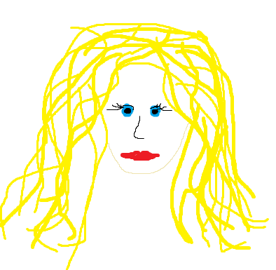

Kajsa Lindroos
Contact me
About me
I'm a new programmer with lots of passion to learn and improve. This is my very first entirely self-made project to show my skills.
Work experience
- Game Developer at BHVR
2018 october 6th - 2020 december 31st
- Website Designer for NoNameCompany
2021 january 1st - 2022 february 16th
- NetWork Engineer
2022 april 21st - 2024 june 3rd
Education
- Unknown Valley Highschool
2011-2014
- University of all programming knowledge
2014-2017
- Angela's Web development bootcamp
2017-2018
Skills
- Web design (html, css)
- Javascript
- C++
I have the most experience in C++, since I use it to create my own games!
- C
- Python